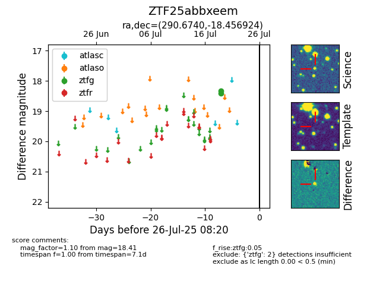

Target ZTF25abbxeem at 2025-07-26 08:20, see:
FINK: fink-portal.org/ZTF25abbxeem
Lasair: lasair-ztf.lsst.ac.uk/objects/ZTF25abbxeem
ALeRCE: alerce.online/object/ZTF25abbxeem
alt names
ZTF25abbxeem (ztf,fink)
coordinates:
equatorial (ra, dec) = (290.6740,-18.45692)
galactic (l, b) = (19.5855,-15.01937)
photometry
last ztfg=18.41
2 ztfg detections
